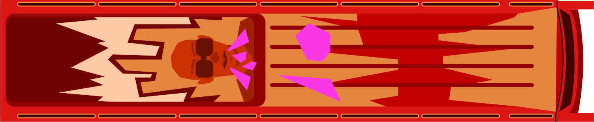

Let's ride through Africa's language landscapes, mapping the digital injustices faced by its people every day.

And along the way, our matatu will also make a scenic, more hopeful detour, tracing stories of how AI is being transformed from a tool of colonial extraction into a practice of self-determination by African communities who are reclaiming their languages online.

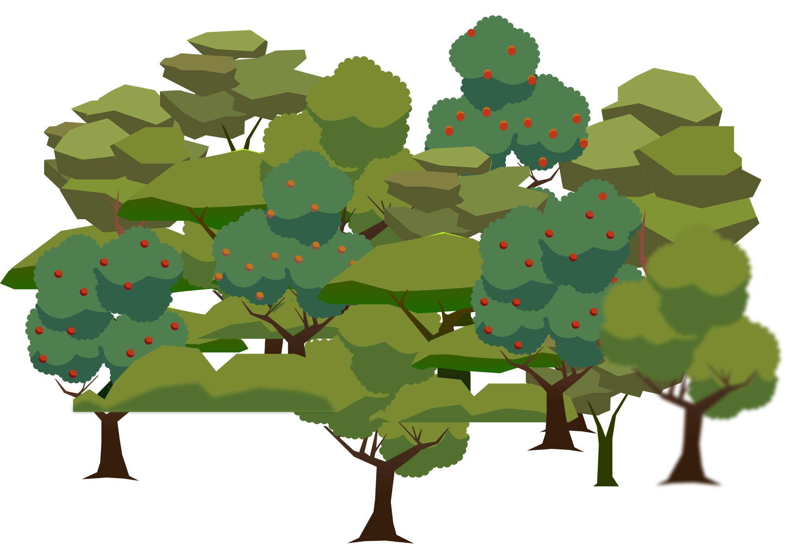


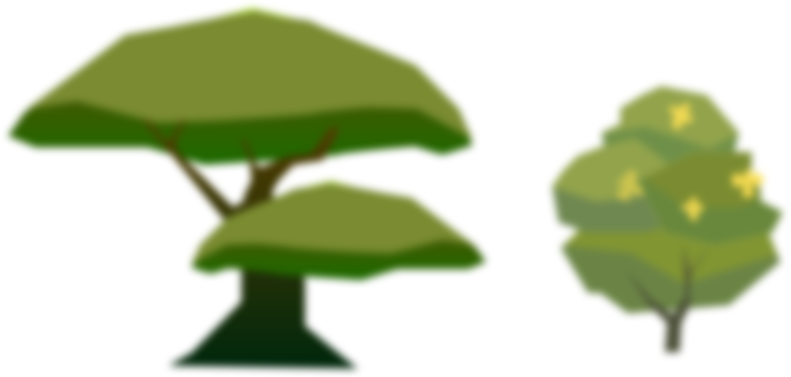


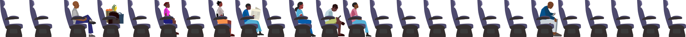


“I think when people understand more about data licensing and sharing, it helps them make better decisions. It’s no longer just open source versus non-open source. Because even open source is a very complex thing. It has different aspects of it.”
“Data set building is very expensive. It would be great to pay people to do it. In some projects we’ve had people volunteer to do it, but I wish we had the money to pay people well to do this work because it’s actually very valuable work.”
There is a critical need to shift the funding paradigm for language technology development towards sustainable, equitable, community-led and locally-driven models that directly benefit the community by creating jobs, boosting local economies, and stimulating continuous tech development.
Much like the matatu system, numerous new initiatives are emerging to address the problem of inequitable and unsustainable funding structures. For example, one collective effort is to unify community-centred language technology groups across Africa under an umbrella organisation, such as the Huniki Federation.
We use the bus fare not only to make a living, but also to maintain the matatu itself and contribute to the roads we all rely on. This local economy benefits the community as a whole.
Matatus are highly organised through a complex network of associations. They are categorised as public services, mostly privately owned, but always collectively managed.
The Huniki Federation aims to create a robust private sector while operating under a social-mission model, reducing dependency on funding from non-profit organisations and Big Tech, and instead investing directly in local communities. This represents a novel, Pan-Africanist approach to achieving digital self-determination.
The lack of economic resources is compounded by Big Tech appropriation: corporations often use open-source datasets to train their models without ever giving back to the communities that curated them.


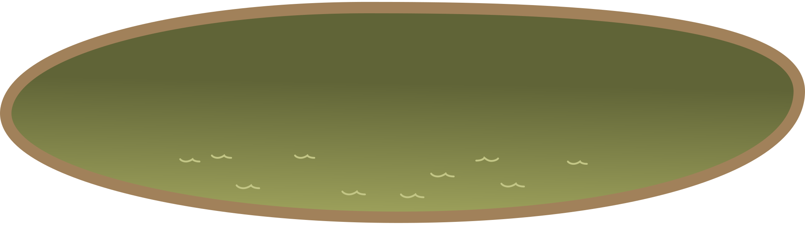


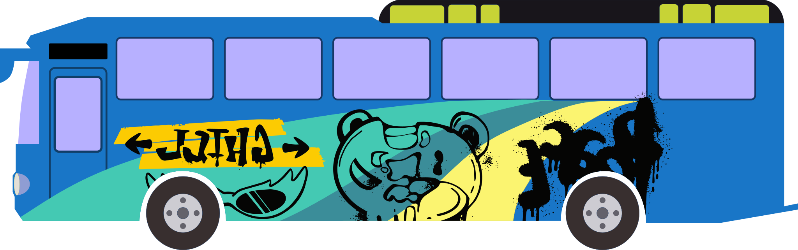
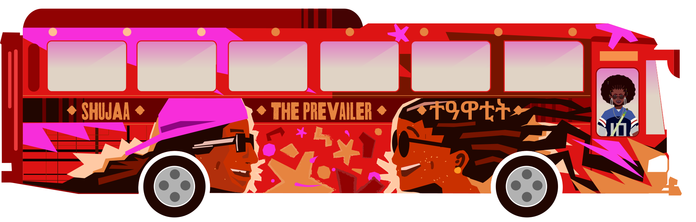
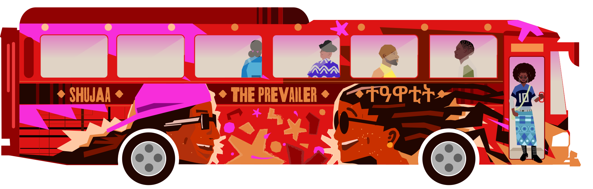


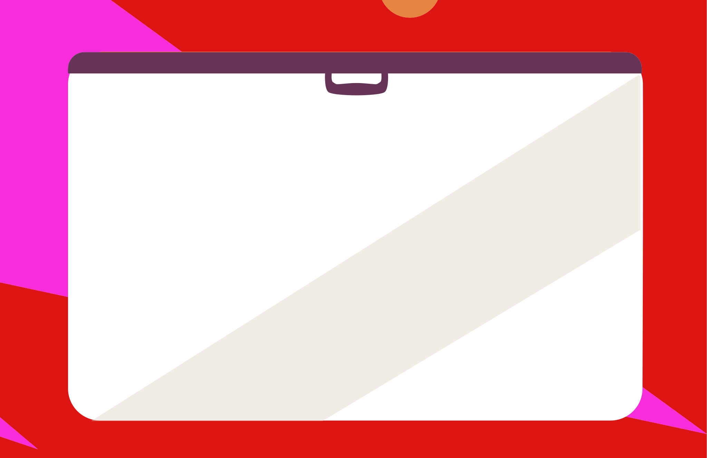


This work was made possible through the generous support of The Internet Society Foundation (ISOC).
Research-in-action process conducted by Whose Knowledge? and the Distributed AI Research Institute (DAIR).
Written by Claudia Pozo and Maari Zwick-Maitreyi with edits from Grusha Dhawan
Website by Studio Ping Pong
Development by House of Katha
Creative representation advisory by Anisa Ali
Tigrinya translation and proofreading by Berhane Achame and Fekadu Gebregziabher.
Kishwahili translation and proofreading by Melchior Shukuru and Exuper Njau

This report is profoundly indebted to the many interviewees who generously shared their time, expertise, and lived experiences. Their insights are the heart of these findings. We feature some of them below:
Alexander Andrason, University of Cape Town
Amrit Sufi, Wikimedian
Anushah Hossain, Script Encoding Initiative (SEI)
Asmelash Teka Hadgu, LesanAI
Awa Ly, GalsenAI
Digital Umuganda
E.M Lewis-Jong, Mozilla Data Collective
Eddie Avila, Rising Voices
EthioNLP
Kalika Bali, Microsoft Research India
Kathleen Siminyu, Distributed AI Research (DAIR)
Lanfrica Labs
Mariana Fossatti, Whose Knowledge?
Meseret Alemayehu, RDLS Ethiopia
Pau Giner, Wikimedia Foundation
Paul Azunre, GhanaNLP
Sadik Shahadu, Dagbani Wikimedians User Group
Seid Muhie Yimam, EthioNLP
Shamsuddeen Hassan Muhammad, HausaNLP
Subhashish Panigrahi, Openspeaks
Reach out to give us feedback and share your thoughts, let us know of African/Global Majority initiatives working on these issues, or recommend someone we should be in conversation with!
Unless otherwise stated, this work is licensed under a Creative Commons Attribution-ShareAlike 4.0 International License. 2026
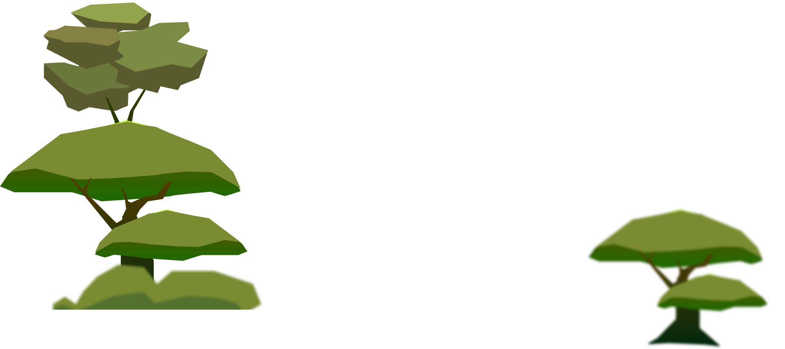


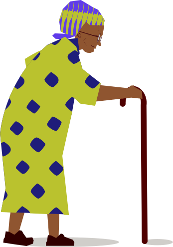


Language is the foundational inheritance passed down from our ancestors, a living connection we share with each other and those who follow us.
It is the very essence of how we think, speak, imagine, and experience the world. It sits at the core of our identity and culture, enabling us to share our stories and collective knowledge.


Alright, my people! Before we go ahead, let's take it back a bit!
For aeons, Africa has been home to over 2,000 distinct languages across 54 countries — a profound pluralism that stands in sharp contrast to the European historical preference for linguistic uniformity.
Colonial powers didn't just ignore this diversity; they sought to erase it, often for administrative efficiency, forcing a multitude of voices into single, "unified" languages.
Now let me draw you a comparison.
Colonial systems neglected public transport networks too. But look around you — this matatu — it filled that gap.
Fast, flexible, for the people.
Today, matatus carry most of Nairobi's commuters, especially into the neighbourhoods colonial roads never reached.
Algorithm Avenue — where the road ahead is written in your own language.


With 85% of the internet dominated by just ten languages, about 9 out of 10 African internet users are forced to switch to a colonial language simply to engage online.
As this pattern repeats globally, billions of people face a digital world where their local languages are functionally invisible.
When local languages are not digitised, they do not just fade from the internet—they risk total extinction. Some scholars call this process 'epistemicide' or digital language death.
These languages are invisible online for multiple reasons. The problem isn't just a lack of sufficient corpora; look around this matatu, the speakers are there in abundance. The deeper problem is that the internet was built for written text, effectively marginalising the rich oral, signed and multivariate language traditions of the Global Majority.
This isn't a technical failure—it's a historical one.
For oral languages, insufficient written and textual corpora have meant that their languages do not have easy access to digitisable and machine-readable data. As a result, they have come to be termed "low-resource languages" by scholars of the Global North.
This under-resourcing is not accidental, but an outcome of the systems that led to the universalisation of Western epistemics. By contrast, we propose to expand on context and identify the histories of how this gap came to be.
By naming them "digitally under-resourced," we point to the fact that the struggle to bring African languages online is not a technical problem; it is a historical one, deeply rooted in the legacy of colonialism.
When a language is excluded from the internet, people's history and knowledge are also silenced. Without resources in their own languages, the next generation is forced to adopt dominant viewpoints, losing their own in the process.
Even when indigenous languages are instituted, widely spoken local languages, such as Amharic and Kiswahili, can overshadow a multitude of languages spoken by a smaller number of people.
This constant pressure to adopt the dominant language, colonial or local, is one of the causes of a profound reduction in linguistic diversity, pushing many languages towards extinction.
Today, the future of languages and all they represent is being decided by a select few. A small group of Big Tech giants—like Google, Microsoft, Meta, and OpenAI—holds the keys to the data centres and foundation models that power the world’s AI.
While Natural Language Processing (NLP) has a long history of non-AI methods, the current scale and pace of AI development is leaving a significant number of languages behind.
The main problem is that the training data imbues foundation models with a permanent, deep-seated bias, meaning the internal conceptual maps of any applications built upon it are fundamentally skewed.
Therefore, when an application tries to process a language with fewer online resources, such as Twi or Ewe, it doesn't have a good map for that language or culture. Instead, the model tries to interpret that language by mapping it onto an existing Western framework.
Big Tech models rely on “one-size-fits-all”, profit-first engineering. They prioritise massive-scale data scraping and statistical patterns over deep cultural or linguistic understanding. Here, language is not treated as embodied knowledge; it is treated as a quantifiable resource to be extracted.
This implies that Big Tech covers only a tiny sliver of human linguistic diversity with high accuracy. This exclusion is cemented by a vicious cycle: because companies invest only where there is a clear return, digitally under-resourced languages become less viable for business.
Then, when a language is deemed unprofitable, Big Tech simply walks away—leaving thousands of languages endangered and excluded.

The road to language justice doesn't end here.
There are many ways to make technology differently that are already in practice—ways that are people-centred, not profit-centred, and that come from communities.
To hear how, we went directly to the source.
We interviewed technologists, linguists, researchers, and Wikimedians, from Ethiopia, Senegal, Kenya, Ghana, Rwanda, and Nigeria among others.
These are people working in languages like Amharic, Tigrinya, Dagbani, Wolof, Twi, Ewe, Gurune, Kinyarwanda, and Kiswahili. They are building community-centred technology through initiatives like Lesan AI, Galsen AI, Lanfrica Labs, Ghana NLP, Digital Umuganda, EthioNLP, and Hausa NLP.
Would you like to hear from them and learn how they are building community-centred technology and changing the narrative on how tech can be made?
Using Bagele Chilisa's Indigenous Research Methodologies, our research-in-action process centres on an African 'relational ontology.' This philosophy defines identity through connections to the living, the ancestors, and the environment, and sees data extraction as a fundamental violation of a person's very being.


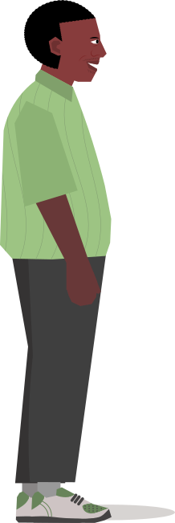
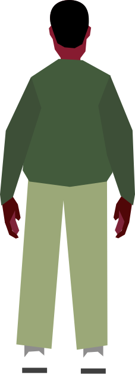
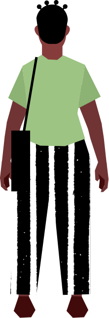
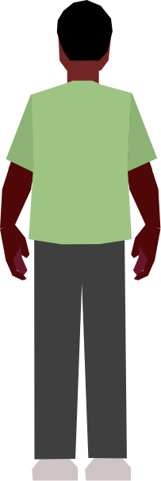


Mambo! Make room, make room!
Welcome, welcome, my brothers and sisters, to The Prevailer—a vessel for reclaiming African languages on the internet. And this matatu is fuelled by you; your expertise, your care. We are grateful for your company on this journey.
Motivated by a digital landscape where they cannot see themselves, these researchers don't just build tools; they build kinship.
When community members design the technology, the developer/user divide dissolves. The speaker is no longer a consumer to be studied, but a co-creator whose lived experience shapes the machine's framework.
This shift transforms AI from a tool of dispossession into a practice of care and self-determination.
“This is why GalsenAI is trying to work on our languages by trying to build machine translations or speech to text technologies for our communities—because we are the ones who know how our language is spoken, we are the ones who know what the language needs. We don’t want to be here waiting for some Americans or any others to come and do this for us.”


African technologists are themselves members of the communities they serve. They build their organisations, methods and models from a place of indigenous relationality and local social history.
In working out solutions to not just technical problems but complex social dynamics, these technologists are moving beyond mere representation to build the right to think, theorise, and interpret the world from an African perspective.
The Digital Umuganda initiative perfectly exemplifies a community-centred approach. It draws directly on the Rwandan philosophy of Umuganda—meaning ‘coming together with purpose’ in Kinyarwanda—a practice in which communities gather for collective public work followed by open discussion.
“So the founders of Digital Umuganda, who were Audace and Ali, sat down, looked at Rwanda and they looked at Digital Umuganda and realised that’s the model that made sense, bringing together the community by making them understand what we are trying to achieve and have them contribute. The rest is history.”
Instead of staying behind a screen, community-centred technologists prioritise on-the-ground practices—physically meeting and spending time with community members to navigate power dynamics, collect on-ground data, and foster mutual trust. In fact, Lesan AI has built some of the best machine translation models for Tigrinya through these methods.
“Many people may not know how to use the Internet or they may not have easy access to it. But we don’t want to limit contributions to just people who have easy access to the Internet. So we also put people on the ground and then distribute these tasks to contributors who don’t necessarily use the Internet. We would go to remote areas and villages with our recording devices to collect audio data and then compensate them and return. This makes our data representative and diverse.”
Here, data collection is an act of shared reflection.
Every data point is an outcome of the community’s historical experience, captured in a way that empowers the collective rather than exploiting the individual. Because this data comes from real conversations rather than internet scraping, the resulting tools are inherently more nuanced.
This relational approach can even filter out the racial, gendered, and systemic biases that often plague mainstream language tech applications.
Major AI models suffer from significant biases that disadvantage many people. For example, they make more errors when processing regional accents than when processing “standard” speech, and they can reinforce gender stereotypes by defaulting to male pronouns in translations.
Language activists and technologists strategically use open knowledge platforms like Wikimedia.
For example, Dagbani language activists began by recording language audio on Wikimedia Commons, which eventually led to a collaboration with language technologists with NLP skills.
This powerful combination of community knowledge and technical expertise is key for building meaningful language technology tools.
“We realised that Wikidata lexicographical data would make a very good use of the data by adding audio pronunciation to lexemes. When NLP Ghana reached out to us, we realised there was a good opportunity to collaborate. We were able to use our Wikimedia data to train their AI model to create the first layer for Dagbani automatic speech recognition in the Khaya application. Seeing it needed more data, Dagbani Wikimedia User Group then began creating sentences and short phrases using solely Wikipedia articles. And this second stage was used to improve the quality of translation on the Khaya application. And that’s how we found ourselves from Wikimedia to NLP. Now the Khaya application fully supports Dagbani text translation and automatic speech recognition. We are now replicating this process for other Mabia languages.”


But, despite their innovation, African initiatives face a staggering funding trap. Huge resource gaps often force local teams to prioritise the goals of Global North donors over community needs, ideal methods, and the urgent needs of their own people.
.svg)
.svg)
.svg)